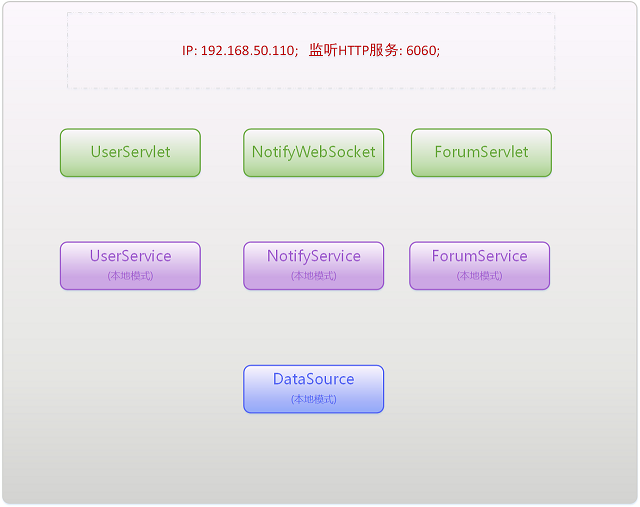
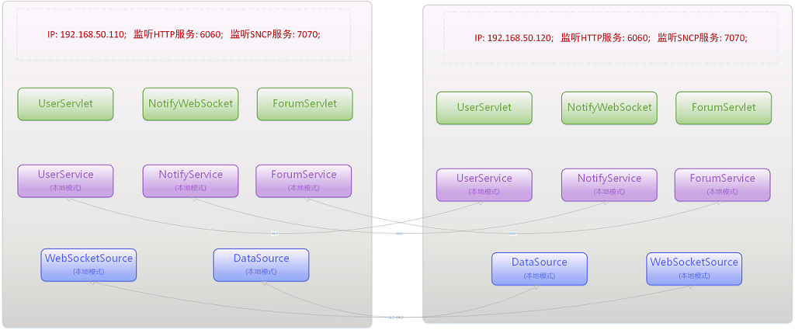
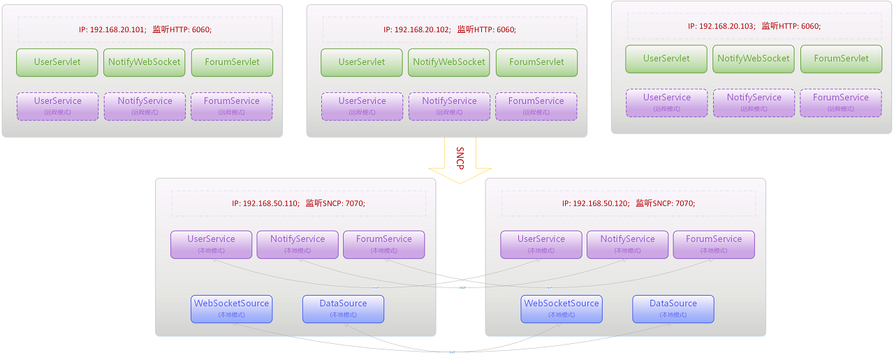
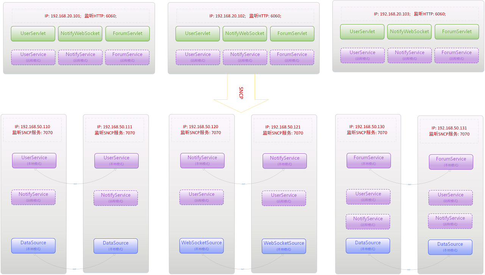
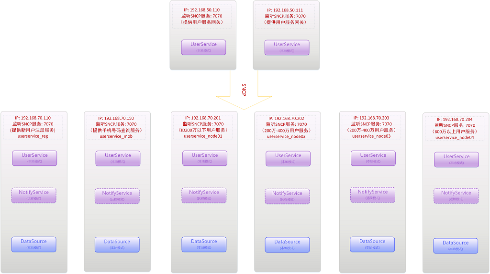

Redkale 功能
Redkale虽然只有1M左右大小，但是麻雀虽小五脏俱全。既可作为服务器使用，也可当工具包使用。作为独立的工具包提供以下功能：
1、convert包提供JSON的序列化和反序列化功能，类似Gson、Jackson。
2、convert包提供Java对象二进制的序列化和反序列化功能，类似Protobuf。
3、source包提供很简便的数据库操作功能，类似JPA、Hibernate。
4、net包提供TCP/UDP服务功能， 类似Mina。
5、net.http提供HTTP服务， 类似Tomcat、Netty。
6、ResourceFactory提供轻量级的依赖注入功能， 类似Google Guice。
Java 源码
Github 源码 https://github.com/redkale
Redkale 服务器
Redkale作为服务器的目录如下:
bin ： 存放启动/关闭/apidoc脚本(start.sh、shutdown.sh、apidoc.sh、start.bat、shutdown.bat、apidoc.bat)
conf ： 存放服务器所需配置文件:
application.xml： 服务配置文件 (必需)；
logging.properties：日志配置文件 (可选)；
persistence.xml：数据库配置文件 (可选)；
lib ： 存放服务所依赖且不需要热更新的第三方包，redkale.jar 放在此处。
libs ： 存放自己的业务jar或需要热更新的jar。
logs ： logging.properties 配置中默认的日志存放目录。
root ： application.xml 配置中HTTP服务所需页面的默认根目录。
Redkale启动的流程如下：
1、加载 application.xml 并解析。
2、初始化 <resources> 节点中的资源。
3、解析所有的 <server> 节点。
4、初始化并启动所有<server> 节点的Server服务 (优先加载SNCP协议的Server，最后加载WATCH协议的Server)。
5、初始化单个Server：
5.1、扫描classpath加载所有可用的Service实现类(没有标记为@AutoLoad(false)的类)并实例化，然后相互依赖注入。
5.2、Service实例在依赖注入过程中加载所需的DataSource、CacheSource资源。
5.3、调用所有本地模式Service的init方法。
5.4、扫描classpath加载所有可用的Servlet实现类(没有标记为@AutoLoad(false)的类)并实例化 (WebSocketServlet优先)。
5.5、给所有Servlet依赖注入所需的Service。
5.6、调用所有Servlet的init方法。
5.7、启动Server的服务监听。
6、启动进程本身的监听服务。
基于Redkale的开发与调试
基于Redkale创建一个Java应用程序工程(即使是Web项目也不要创建Java-Web工程)，引用redkale.jar 并创建Redkale所需的几个目录和文件。一个普通的Web项目只需要编写业务层的Service和接入层的HttpServlet的代码。数据库DataSource通过配置文件进行设置。
编写完代码可以通过启动脚本进行调试， 也可以在IDE设置项目的主类为 org.redkale.boot.Application 或者工程内定义主类进行启动调试:
public final class Bootstrap {
public static void main(String[] args) throws Exception {
org.redkale.boot.Application.main(args);
}
}若需要调试单个Service，可以通过 Application.singleton 方法进行调试：
public static void main(String[] args) throws Exception {
UserService service = Application.singleton(UserService.class);
LoginBean bean = new LoginBean();
bean.setAccount("myaccount");
bean.setPassword("123456");
System.out.println(service.login(bean));
} Application.singleton 运行流程与通过bin脚本启动的流程基本一致，区别在于singleton运行时不会启动Server和Application自身的服务监听。Redkale提倡接入层(Servlet)与业务层(Service)分开，Service在代码上不能依赖于Servlet，因此调试Service自身逻辑时不需要启动接入层服务(类似WebSocket依赖Servlet的功能除外)。
注: Application.singleton的参数Service类不能是抽象类、接口或不存在非final的public方法。
Redkale的依赖注入
Redkale内置的依赖注入实现很简单，只有三个注解和一个类: javax.annotation.Resource、org.redkale.util.ResourceType、org.redkale.util.ResourceListener、org.redkale.util.ResourceFactory，采用反射技术，依赖注入通常不会在频繁的操作中进行，因此性能要求不会很高。其中前两个是注解，ResourceFactory是主要操作类，主要提供注册和注入两个接口。ResourceFactory的依赖注入不仅提供其他依赖注入框架的常规功能，还能动态的自动更新通过inject注入的资源。
public class AService {
@Resource(name = "property.id")
private String id;
@Resource(name = "property.id") //property.开头的资源名允许String自动转换成primitive数值类型
private int intid;
@Resource(name = "bigint")
private BigInteger bigint;
@Resource(name = "seqid")
private int seqid;
@Resource
private BService bservice;
@Override
public String toString() {
return "{id:\"" + id + "\", intid: " + intid + ", bigint:" + bigint + "}";
}
/** 以下省略getter setter方法 */
}
public class BService {
@Resource(name = "property.id")
private String id;
@Resource
private AService aservice;
private String name = "";
@java.beans.ConstructorProperties({"name"})
public BService(String name) {
this.name = name;
}
@Override
public String toString() {
return "{name:\"" + name + "\", id: " + id + ", aserivce:" + aservice + "}";
}
/** 以下省略getter setter方法 */
}
public static void main(String[] args) throws Exception {
ResourceFactory factory = ResourceFactory.root();
factory.register("property.id", "2345"); //注入String类型的property.id
AService aservice = new AService();
BService bservice = new BService("eee");
factory.register(aservice); //放进Resource池内，默认的资源名name为""
factory.register(bservice); //放进Resource池内，默认的资源名name为""
factory.inject(aservice); //给aservice注入id、bservice，bigint没有资源，所以为null
factory.inject(bservice); //给bservice注入id、aservice
System.out.println(aservice); //输出结果为：{id:"2345", intid:2345, bigint:null, bservice:{name:eee}}
System.out.println(bservice); //输出结果为：{name:"eee", id:2345, aserivce:{id:"2345", intid:2345, bigint:null, bservice:{name:eee}}}
factory.register("seqid", 200); //放进Resource池内, 同时ResourceFactory会自动更新aservice的seqid值
System.out.println(factory.find("seqid", int.class)); //输出结果为：200
factory.register("bigint", new BigInteger("66666")); //放进Resource池内, 同时ResourceFactory会自动更新aservice对象的bigint值
System.out.println(aservice); //输出结果为：{id:"2345", intid:2345, bigint:66666, bservice:{name:eee}}可以看出seqid与bigint值都已自动更新
factory.register("property.id", "6789"); //更新Resource池内的id资源值, 同时ResourceFactory会自动更新aservice、bservice的id值
System.out.println(aservice); //输出结果为：{id:"6789", intid:6789, bigint:66666, bservice:{name:eee}}
System.out.println(bservice); //输出结果为：{name:"eee", id:6789, aserivce:{id:"6789", intid:6789, bigint:66666, bservice:{name:eee}}}
bservice = new BService("ffff");
factory.register(bservice); //更新Resource池内name=""的BService资源, 同时ResourceFactory会自动更新aservice的bservice对象
factory.inject(bservice);
System.out.println(aservice); //输出结果为：{id:"6789", intid: 6789, bigint:66666, bservice:{name:ffff}}
}如上例，通过ResourceFactory.inject注入的对象都会自动更新资源的变化，若不想自动更新可以使用带boolean autoSync参数的register系列方法(autoSync传false)注册新资源。
Redkale 架构部署
通常一个系统会分为三层：接入层、业务层、数据层。对应到Redkale的组件是： Servlet、Service、Source。大部分系统提供的是HTTP服务，为了方便演示Redkale从集中式到分布式的变化，以一个简单的HTTP服务作为范例。
开发一个极简单的小论坛系统。包含三个模块：
用户模块 UserSerivice: 提供用户注册、登录、更新资料等功能， UserServlet作为接入层。
帖子模块 ForumSerivice: 提供看帖、发帖、删帖等功能， ForumServlet作为接入层。
通知模块 NotifySerivice: 提供用户操作、回帖等消息通知功能， NotifyWebSocket是WebSocket的Servlet, 且name为 ws_notify，作为接入层。
其中数据源有：
DataSource: 在persistence.xml里配置的数据库Source的name为demodb ,三个模块都需要使用demodb。
CacheSource: 仅供UserSerivice用于存放session的缓存Service，name为 usersessions, 且session只存放用户ID( int 类型)。
1、单点部署
在早期用户量很少或者开发、调试环境中只需部署一个进程就可满足需求。

如上图，所有模块的HttpServlet、Service与Source数据库操作全部署在一起。 application.xml作简单的配置即可:
<application port="5050">
<server protocol="HTTP" port="6060" root="root">
<services autoload="true" />
<servlets autoload="true"/>
</server>
</application>2、多点部署
在生产环境需要避免单点问题，一个服务一般会部署多套。在此做个简单的容灾部署，最前端部署一个nginx作反向代理和负载均衡服务器，后面部署两套系统。

如上图，两个进程间的Serivce都是本地模式，两者会通过SNCP服务保持数据同步，若DataSource开启了数据缓存也会自动同步。两套的配置文件相同，配置如下:
<application port="5050">
<resources>
<group name="ALL">
<node addr="192.168.50.110" port="7070"/>
<node addr="192.168.50.120" port="7070"/>
</group>
</resources>
<!-- HTTP 监听 Server -->
<server protocol="HTTP" port="6060" root="root">
<!-- 前端配置了nginx，需要配置才能获取客户端真实的IP地址 -->
<request>
<remoteaddr value="request.headers.X-RemoteAddress"/>
</request>
<services autoload="true" groups="ALL"/>
<servlets autoload="true" />
</server>
<!-- SNCP 监听 Server -->
<server protocol="SNCP" port="7070">
<services autoload="true" groups="ALL">
<!-- 有WebSocketServlet的服务必须配置WebSocketNodeService，且Redkale同时会自动创建一个同名(ws_notify)的 CacheSource -->
<service name="ws_notify" value="org.redkale.service.WebSocketNodeService"/>
<!-- 存在DataSource必须配置DataSourceService -->
<service name="demodb" value="org.redkale.service.DataSourceService"/>
<!-- 存放用户HTTP session信息的CacheSource -->
<service name="usersessions" value="org.redkale.service.CacheSourceService">
<property name="key-type" value="java.lang.String"/>
<property name="value-type" value="java.lang.Integer"/>
</service>
</services>
</server>
</application>3、分层部署
随着业务的复杂度增加，接入层与业务层混在一起会越来越难部署和维护，因此需要进行分层部署。

如上图，对HttpServlet与Service进行了分离。每个接入层的Service都是远程模式，业务层只需提供SNCP供远程调用。
接入层中每个进程的配置相同，配置如下:
<application port="5050">
<resources>
<group name="ALL">
<node addr="192.168.50.110" port="7070"/>
<node addr="192.168.50.120" port="7070"/>
</group>
</resources>
<!-- HTTP 监听 Server -->
<server protocol="HTTP" port="6060" root="root">
<!-- 前端配置了nginx，需要配置才能获取客户端真实的IP地址 -->
<request>
<remoteaddr value="request.headers.X-RemoteAddress"/>
</request>
<services autoload="true" groups="ALL">
<!-- 有WebSocketServlet的服务必须配置WebSocketNodeService，且Redkale同时会自动创建一个同名(ws_notify)的 CacheSource -->
<service name="ws_notify" value="org.redkale.service.WebSocketNodeService"/>
</services>
<servlets autoload="true" />
</server>
</application>业务层中每个进程的配置相同，配置如下:
<application port="5050">
<resources>
<group name="ALL">
<node addr="192.168.50.110" port="7070"/>
<node addr="192.168.50.120" port="7070"/>
</group>
</resources>
<!-- SNCP 监听 Server -->
<server protocol="SNCP" port="7070">
<services autoload="true" groups="ALL">
<!-- 有WebSocketServlet的服务必须配置WebSocketNodeService，且Redkale同时会自动创建一个同名(ws_notify)的 CacheSource -->
<service name="ws_notify" value="org.redkale.service.WebSocketNodeService"/>
<!-- 存在DataSource必须配置DataSourceService -->
<service name="demodb" value="org.redkale.service.DataSourceService"/>
<!-- 存放用户HTTP session信息的CacheSource -->
<service name="usersessions" value="org.redkale.service.CacheSourceService">
<property name="key-type" value="java.lang.String"/>
<property name="value-type" value="java.lang.Integer"/>
</service>
</services>
</server>
</application>4、微服务部署
当用户量和发帖量增加到上百万的时候，明显地将所有模块的服务部署到一个进程里是不行的。 因此需要将Service服务都独立部署形成微服务架构。

如上图，将Serivice都独立部署并进行容灾部署，当然如果有需要，Servlet之间、Source都可以各自分离独立部署。不同类型的Service之间都是远程模式调用。
接入层中每个进程的配置相同，配置如下:
<application port="5050">
<resources>
<group name="USER_SERVICE">
<node addr="192.168.50.110" port="7070"/>
<node addr="192.168.50.111" port="7070"/>
</group>
<group name="NOTIFY_SERVICE">
<node addr="192.168.50.120" port="7070"/>
<node addr="192.168.50.121" port="7070"/>
</group>
<group name="FORUM_SERVICE">
<node addr="192.168.50.130" port="7070"/>
<node addr="192.168.50.131" port="7070"/>
</group>
</resources>
<!-- HTTP 监听 Server -->
<server protocol="HTTP" port="6060" root="root">
<!-- 前端配置了nginx，需要配置才能获取客户端真实的IP地址 -->
<request>
<remoteaddr value="request.headers.X-RemoteAddress"/>
</request>
<services autoload="true">
<service value="org.redkale.demo.UserService" groups="USER_SERVICE"/>
<service value="org.redkale.demo.NotifyService" groups="NOTIFY_SERVICE"/>
<service value="org.redkale.demo.ForumService" groups="FORUM_SERVICE"/>
<!-- 有WebSocketServlet的服务必须配置WebSocketNodeService，且Redkale同时会自动创建一个同名(ws_notify)的 CacheSource -->
<service name="ws_notify" value="org.redkale.service.WebSocketNodeService" groups="NOTIFY_SERVICE"/>
</services>
<servlets autoload="true" />
</server>
</application>用户模块UserService服务群中各个进程的配置相同，配置如下:
<application port="5050">
<resources>
<group name="USER_SERVICE">
<node addr="192.168.50.110" port="7070"/>
<node addr="192.168.50.111" port="7070"/>
</group>
<group name="NOTIFY_SERVICE">
<node addr="192.168.50.120" port="7070"/>
<node addr="192.168.50.121" port="7070"/>
</group>
<group name="FORUM_SERVICE">
<node addr="192.168.50.130" port="7070"/>
<node addr="192.168.50.131" port="7070"/>
</group>
</resources>
<!-- SNCP 监听 Server -->
<server protocol="SNCP" port="7070">
<services autoload="true">
<service value="org.redkale.demo.NotifyService" groups="NOTIFY_SERVICE"/>
<service value="org.redkale.demo.ForumService" groups="FORUM_SERVICE"/>
<!-- 存在DataSource必须配置DataSourceService -->
<service name="demodb" value="org.redkale.service.DataSourceService" groups="USER_SERVICE"/>
<!-- 存放用户HTTP session信息的CacheSource -->
<service name="usersessions" value="org.redkale.service.CacheSourceService" groups="USER_SERVICE">
<property name="key-type" value="java.lang.String"/>
<property name="value-type" value="java.lang.Integer"/>
</service>
</services>
</server>
</application>通知模块NotifyService服务群中各个进程的配置相同，配置如下:
<application port="5050">
<resources>
<group name="USER_SERVICE">
<node addr="192.168.50.110" port="7070"/>
<node addr="192.168.50.111" port="7070"/>
</group>
<group name="NOTIFY_SERVICE">
<node addr="192.168.50.120" port="7070"/>
<node addr="192.168.50.121" port="7070"/>
</group>
<group name="FORUM_SERVICE">
<node addr="192.168.50.130" port="7070"/>
<node addr="192.168.50.131" port="7070"/>
</group>
</resources>
<!-- SNCP 监听 Server -->
<server protocol="SNCP" port="7070">
<services autoload="true">
<service value="org.redkale.demo.UserService" groups="USER_SERVICE"/>
<service value="org.redkale.demo.ForumService" groups="FORUM_SERVICE"/>
<!-- 有WebSocketServlet的服务必须配置WebSocketNodeService，且Redkale同时会自动创建一个同名(ws_notify)的 CacheSource -->
<service name="ws_notify" value="org.redkale.service.WebSocketNodeService" groups="NOTIFY_SERVICE"/>
<!-- 存在DataSource必须配置DataSourceService -->
<service name="demodb" value="org.redkale.service.DataSourceService" groups="NOTIFY_SERVICE"/>
</services>
</server>
</application>帖子模块ForumService服务群中各个进程的配置相同，配置如下:
<application port="5050">
<resources>
<group name="USER_SERVICE">
<node addr="192.168.50.110" port="7070"/>
<node addr="192.168.50.111" port="7070"/>
</group>
<group name="NOTIFY_SERVICE">
<node addr="192.168.50.120" port="7070"/>
<node addr="192.168.50.121" port="7070"/>
</group>
<group name="FORUM_SERVICE">
<node addr="192.168.50.130" port="7070"/>
<node addr="192.168.50.131" port="7070"/>
</group>
</resources>
<!-- SNCP 监听 Server -->
<server protocol="SNCP" port="7070">
<services autoload="true">
<service value="org.redkale.demo.UserService" groups="USER_SERVICE"/>
<service value="org.redkale.demo.NotifyService" groups="NOTIFY_SERVICE"/>
<!-- 存在DataSource必须配置DataSourceService -->
<service name="demodb" value="org.redkale.service.DataSourceService" groups="FORUM_SERVICE"/>
</services>
</server>
</application>5、API网关式部署
随着用户量到了上千万时，一个UserService的服务进程是无法提供全部用户服务。 因此可以考虑按用户段进行分布式部署。将192.168.50.110、192.168.50.111上的UserService服务改成网关式的服务。下面是以 Service本地模式介绍中的UserService 为范例进行编写：
@ResourceType({UserService.class})
public class UserServiceGateWay extends UserService {
@Resource(name = "userservice_reg")
private UserService regUserService; //只用于注册的服务节点
@Resource(name = "userservice_mob")
private UserService mobUserService; //只用于查询手机号码对应的userid的服务节点
@Resource(name = "userservice_node01")
private UserService userService01; //userid小于2000000的用户的服务节点
@Resource(name = "userservice_node02")
private UserService userService02; //userid小于4000000的用户的服务节点
@Resource(name = "userservice_node03")
private UserService userService03; //userid小于6000000的用户的服务节点
@Resource(name = "userservice_node04")
private UserService userService04; //userid大于6000000的用户的服务节点
private UserService getService(int userid) {
if (userid <= 200_0000) return userService01;
if (userid <= 400_0000) return userService02;
if (userid <= 600_0000) return userService03;
return userService04;
}
@Override
public UserInfo findUserInfo(int userid) {
return this.getService(userid).findUserInfo(userid);
}
@Override
public RetResult<UserInfo> login(LoginBean bean) { //手机号码用long存储，0表示无手机号码
int userid = mobUserService.findUserid(bean.getMobile());
if (userid < 1) return new RetResult<>(10001, "not found mobile " + bean.getMobile());
return this.getService(userid).login(bean);
}
@Override
public void register(UserInfo user) {
regUserService.register(user); //会生成userid
this.getService(user.getUserid()).putUserInfo(user);
}
@Override
public UserInfo updateUsername(int userid, String username) {
return this.getService(userid).updateUsername(userid, username);
}
}
从代码看出，UserServiceGateWay继承了UserService， 确保了UserService对外的服务接口不变，上面代码是用户量在600-800万之间的写法，通过简单的用户ID分段，根据不同用户ID调不同的服务节点。

如上图，网关下的UserService部署分三类： userservice_reg只用于注册用户；userservice_mob提供查询手机号码与用户ID间的关系的服务；userservice_node按用户段提供已有用户的服务。且每个UserService的实例在UserServiceGateWay都是远程模式。每种类型可以部署多个节点（为了结构图简单，上图每个类型只部署一个节点）。UserServiceGateWay（192.168.50.110、192.168.50.111）的配置如下：
<application port="5050">
<resources>
<group name="USER_SERVICE_REG">
<node addr="192.168.70.110" port="7070"/>
</group>
<group name="USER_SERVICE_MOB">
<node addr="192.168.70.150" port="7070"/>
</group>
<group name="USER_SERVICE_NODE01">
<node addr="192.168.70.201" port="7070"/>
</group>
<group name="USER_SERVICE_NODE02">
<node addr="192.168.70.202" port="7070"/>
</group>
<group name="USER_SERVICE_NODE03">
<node addr="192.168.70.203" port="7070"/>
</group>
<group name="USER_SERVICE_NODE04">
<node addr="192.168.70.204" port="7070"/>
</group>
<group name="USER_SERVICE">
<node addr="192.168.50.110" port="7070"/>
<node addr="192.168.50.111" port="7070"/>
</group>
</resources>
<!-- SNCP 监听 Server -->
<server protocol="SNCP" port="7070">
<services autoload="true">
<!-- 配置UserService网关 -->
<service name="" value="org.redkale.demo.UserServiceGateWay" groups="USER_SERVICE"/>
<!-- 配置UserService分段节点 -->
<service name="userservice_reg" value="org.redkale.demo.UserService" groups="USER_SERVICE_REG"/>
<service name="userservice_mob" value="org.redkale.demo.UserService" groups="USER_SERVICE_MOB"/>
<service name="userservice_node01" value="org.redkale.demo.UserService" groups="USER_SERVICE_NODE01"/>
<service name="userservice_node02" value="org.redkale.demo.UserService" groups="USER_SERVICE_NODE02"/>
<service name="userservice_node03" value="org.redkale.demo.UserService" groups="USER_SERVICE_NODE03"/>
<service name="userservice_node04" value="org.redkale.demo.UserService" groups="USER_SERVICE_NODE03"/>
</services>
</server>
</application> 由以上几种部署方式的范例可以看出，Redkale提供了非常强大的架构，集中式到微服务架构不需要增加修改一行代码即可随意切换，即使网关式部署也只是新增很少的代码就可切换，且不影响其他服务。真正可以做到敏捷开发，复杂的系统都可如小系统般快速地开发出来。
为了降低接入层与业务层代码的耦合， 可以将Service分接口与实现两个类，接入层只加载接口包、业务层使用实现包。
application.xml 配置说明
<?xml version="1.0" encoding="UTF-8"?>
<!--
文件说明:
${APP_HOME} 指当前程序的根目录APP_HOME
没注明唯一的节点可多个存在
required： 被声明required的属性值不能为空
group
/ / \ \
/ / \ \
/ / \ \
node1 node2 node3 node4
/ \
/ \
/ \
/ \
serviceid1 serviceid2
/ \ / \
serviceid1_name1 serviceid1_name2 serviceid2_name1 serviceid2_name2
-->
<!--
address: 本地局域网的IP地址， 默认值为默认网卡的ip，当不使用默认值需要指定值，如192.168.1.22
port: required 程序的管理Server的端口，用于关闭或者与监管系统进行数据交互
lib: 加上额外的lib路径,多个路径用分号;隔开； 默认为空。 例如: ${APP_HOME}/lib/a.jar;${APP_HOME}/lib2/b.jar;
-->
<application port="6560" lib="">
<!--
【节点全局唯一】
所有服务所需的资源
-->
<resources>
<!--
【节点全局唯一】
transport节点只能有一个，用于配置所有Transport的池参数，没配置该节点将自动创建一个。
threads： 线程总数， 默认: <group>节点数*CPU核数*2
bufferCapacity: ByteBuffer的初始化大小， 默认: 32K;
bufferPoolSize： ByteBuffer池的大小，默认: 线程总数*4
readTimeoutSecond: TCP读取超时秒数, 默认为6秒， 为0表示无超时限制
writeTimeoutSecond: TCP写入超时秒数, 默认为6秒， 为0表示无超时限制
strategy: 远程请求的负载均衡策略， 必须是org.redkale.net.TransportStrategy的实现类
-->
<transport bufferCapacity="32K" bufferPoolSize="32" threads="32" readTimeoutSecond="6" writeTimeoutSecond="6"/>
<!--
一个组包含多个node， 同一Service服务可以由多个进程提供，这些进程称为一个GROUP，且同一GROUP内的进程必须在同一机房或局域网内
一个group节点对应一个 Transport 对象。
name: 服务组ID，长度不能超过11个字节. 默认为空字符串。 注意: name不能包含$符号。
protocol：值范围：UDP TCP， 默认TCP
subprotocol: 子协议，预留字段。默认值为空
注意: 一个node只能所属一个group。只要存在protocol=SNCP的Server节点信息， 就必须有group节点信息。
-->
<group name="" protocol="TCP">
<!--
需要将本地node的addr与port列在此处。
同一个<node>节点值只能存在一个<group>节点内，即同一个addr+port只能属于一个group。
addr: required IP地址
port: required 端口
-->
<node addr="127.0.0.1" port="7070"/>
</group>
<!--
全局的数据源设置, 可以是CacheSource、DataSource， JDBC的DataSource通常通过persistence.xml配置，此处多用于CacheSource的配置
name: 资源名，用于依赖注入。
value：类名，必须是CacheSource或DataSource的子类，且必须实现Service接口。如果是DataSource.class，系统自动映射成DataJdbcSource.class
groups: 指定groups。
xxx: 其他属性与子节点通过Service.init方法传入的AnyValue获取。
-->
<source name="redis" value="org.redkalex.cache.RedisCacheSource" xxx="16">
<node addr="127.0.0.1" port="7070"/>
</source>
<!--
Application启动的监听事件,可配置多个节点
value: 类名，必须是ApplicationListener的子类
-->
<listener value="org.redkalex.xxx.XXXApplicationListener"/>
<!--
【节点全局唯一】
全局的参数配置, 可以通过@Resource(name="property.xxxxxx") 进行注入<property>的信息, 被注解的字段类型只能是String、primitive class
如果name是system.property.开头的值将会在进程启动时进行System.setProperty("yyyy", "YYYYYY")操作。
如果name是mimetype.property.开头的值将会在进程启动时进行MimeType.add("yyyy", "YYYYYY")操作。
load: 加载文件，多个用;隔开。
默认置入的system.property.的有：
System.setProperty("net.transport.pinginterval", "30");
System.setProperty("convert.json.tiny", "true");
System.setProperty("convert.bson.tiny", "true");
System.setProperty("convert.json.pool.size", "128");
System.setProperty("convert.bson.pool.size", "128");
System.setProperty("convert.json.writer.buffer.defsize", "4096");
System.setProperty("convert.bson.writer.buffer.defsize", "4096");
<properties>节点下也可包含非<property>节点.
非<property>其节点可以通过@Resource(name="properties.xxxxxx")进行注入, 被注解的字段类型只能是AnyValue、AnyValue[]
-->
<properties load="config.properties">
<property name="system.property.yyyy" value="YYYYYY"/>
<property name="xxxxxx" value="XXXXXXXX"/>
<property name="xxxxxx" value="XXXXXXXX"/>
<property name="xxxxxx" value="XXXXXXXX"/>
</properties>
</resources>
<!--
protocol: required server所启动的协议，Redkale内置的有HTTP、SNCP、WATCH。协议均使用TCP实现; WATCH服务只能存在一个。
name: 服务的名称，用于监控识别，一个配置文件中的server.name不能重复,命名规则: 字母、数字、下划线
host: 服务所占address ， 默认: 0.0.0.0
port: required 服务所占端口
root: 如果是web类型服务，则包含页面 默认:{APP_HOME}/root
lib: server额外的class目录， 默认为${APP_HOME}/libs/*;
excludelibs: 排除lib.path与excludes中的正则表达式匹配的路径, 多个正则表达式用分号;隔开
charset: 文本编码， 默认: UTF-8
backlog: 默认10K
threads： 线程总数， 默认: CPU核数*8
maxconns：最大连接数, 小于1表示无限制， 默认: 0
maxbody: request.body最大值， 默认: 64K
bufferCapacity: ByteBuffer的初始化大小， 默认: 32K; (HTTP 2.0、WebSocket，必须要16k以上)
bufferPoolSize： ByteBuffer池的大小，默认: 线程总数*4
responsePoolSize： Response池的大小，默认: 线程总数*2
readTimeoutSecond: 读操作超时秒数， 默认0， 表示永久不超时
writeTimeoutSecond: 写操作超时秒数， 默认0， 表示永久不超时
interceptor: 启动/关闭NodeServer时被调用的拦截器实现类，必须是org.redkale.boot.NodeInterceptor的子类，默认为null
-->
<server protocol="HTTP" host="127.0.0.1" port="6060" root="root" lib="">
<!--
加载所有的Service服务;
在同一个进程中同一个name同一类型的Service将共用同一个实例
autoload="true" 默认值. 自动加载classpath下所有的Service类
autoload="false" 需要显著的指定Service类
includes： 当autoload="true"， 拉取类名与includes中的正则表达式匹配的类, 多个正则表达式用分号;隔开
excludes： 当autoload="true"， 排除类名与excludes中的正则表达式匹配的类, 多个正则表达式用分号;隔开
groups: 所属组的节点,多个节点值用;隔开，如果配置文件中存在多个SNCP协议的Server节点，需要显式指定group属性.
当 protocol == SNCP 时 group表示当前Server与哪些节点组关联。
当 protocol != SNCP 时 group只能是空或者一个group的节点值，不能为多个节点值。
-->
<services autoload="true" includes="" excludes="">
<!-- 显著加载指定的Service的接口类 -->
<service value="com.xxx.XXX1Service"/>
<!--
name: 显式指定name，覆盖默认的空字符串值。 注意: name不能包含$符号。
groups: 显式指定groups，覆盖<services>节点的groups默认值。
ignore: 是否禁用， 默认为false。
-->
<service value="com.xxx.XXX2Service" name="" groups="xxx;yyy"/>
<!-- 给Service增加配置属性 -->
<service value="com.xxx.XXX1Service">
<!-- property值在public void init(AnyValue conf)方法中可以通过AnyValue properties=conf.getAnyValue("properties")获取 -->
<property name="xxxxxx" value="XXXXXXXX"/>
<property name="xxxxxx" value="XXXXXXXX"/>
</service>
</services>
<!--
加载所有的Filter服务;
autoload="true" 默认值.
autoload="false" 需要显著的指定Filter类
includes： 当autoload="true"， 拉取类名与includes中的正则表达式匹配的类, 多个正则表达式用分号;隔开
excludes： 当autoload="true"， 排除类名与excludes中的正则表达式匹配的类, 多个正则表达式用分号;隔开
-->
<filters autoload="true" includes="" excludes="">
<!--
显著加载指定的Filter类
value=: Filter类名。必须与Server的协议层相同，HTTP必须是HttpFilter
ignore: 是否禁用， 默认为false。
-->
<!-- 显著加载指定的Filter类 -->
<filter value="com.xxx.XXX1Filter"/>
<!-- 给Filter增加配置属性 -->
<filter value="com.xxx.XXX12Filter">
<!-- property值在public void init(AnyValue conf)方法中可以通过AnyValue properties=conf.getAnyValue("properties")获取 -->
<property name="xxxxxx" value="XXXXXXXX"/>
<property name="xxxxxx" value="XXXXXXXX"/>
</filter>
</filters>
<!--
REST的核心配置项
当Server为HTTP协议时, rest节点才有效。存在[rest]节点则Server启动时会加载REST服务, 节点可以多个,(WATCH协议不需要设置，系统会自动生成)
path: servlet的ContextPath前缀 默认为空
base: REST服务的BaseServlet，必须是 org.redkale.net.http.HttpServlet 的子类，且子类必须标记@HttpUserType。
autoload：默认值"true" 默认值. 加载当前server所能使用的Servce对象;
includes：当autoload="true"， 拉取类名与includes中的正则表达式匹配的类, 多个正则表达式用分号;隔开
excludes：当autoload="true"， 排除类名与excludes中的正则表达式匹配的类, 多个正则表达式用分号;隔开
-->
<rest path="/pipes" base="org.redkale.net.http.HttpServlet" autoload="true" includes="" excludes="">
<!--
value: Service类名，列出的表示必须被加载的Service对象
ignore: 是否忽略，设置为true则不会加载该Service对象，默认值为false
-->
<service value="com.xxx.XXXXService"/>
<!--
value: WebSocket类名，列出的表示必须被加载且标记为@RestWebSocket的WebSocket对象
ignore: 是否忽略，设置为true则不会加载该RestWebSocket对象，默认值为false
-->
<websocket value="com.xxx.XXXXRestWebSocket"/>
</rest>
<!--
【节点在<server>中唯一】
当Server为HTTP协议时, request节点才有效。
remoteaddr 节点: 替换请求方节点的IP地址， 通常请求方是由nginx等web静态服务器转发过的则需要配置该节点。
且value值只能是以request.headers.开头，表示从request.headers中获取对应的header值。
例如下面例子获取request.getRemoteAddr()值，如果header存在X-RemoteAddress值则返回X-RemoteAddress值，不存在返回getRemoteAddress()。
-->
<request>
<remoteaddr value="request.headers.X-RemoteAddress"/>
</request>
<!--
【节点在<server>中唯一】
当Server为HTTP协议时, response节点才有效。
defcookie 节点: 当response里输出的cookie没有指定domain 和path时，使用该节点的默认值。
如果addheader、setheader 的value值以request.parameters.开头则表示从request.parameters中获取对应的parameter值
如果addheader、setheader 的value值以request.headers.开头则表示从request.headers中获取对应的header值
例如下面例子是在Response输出header时添加两个header（一个addHeader， 一个setHeader）。
options 节点: 设置了该节点却auto=true，当request的method=OPTIONS自动设置addheader、setheader并返回200状态码
-->
<response>
<defcookie domain="" path=""/>
<addheader name="Access-Control-Allow-Origin" value="request.headers.Origin" />
<setheader name="Access-Control-Allow-Headers" value="request.headers.Access-Control-Request-Headers"/>
<setheader name="Access-Control-Allow-Credentials" value="true"/>
<options auto="true" />
</response>
<!--
【节点在<server>中唯一】
当Server为HTTP协议时，render才有效. 指定输出引擎的实现类
value: 输出引擎的实现类, 必须是org.redkale.net.http.HttpRender的子类
-->
<render value="org.redkalex.htel.HttpTemplateRender"/>
<!--
【节点在<server>中唯一】
当Server为HTTP协议时，ResourceServlet才有效. 默认存在一个有默认属性的resource-servlet节点
webroot: web资源的根目录, 默认取server节点中的root值
servlet: 静态资源HttpServlet的实现，默认使用HttpResourceServlet
index : 启始页，默认值：index.html
-->
<resource-servlet webroot="root" index="index.html">
<!--
【节点在<resource-servlet>中唯一】
资源缓存的配置, 默认存在一个含默认属性的caches节点
limit: 资源缓存最大容量， 默认: 0, 为0表示不缓存， 单位可以是B、K、M、G，不区分大小写
lengthmax: 可缓存的文件大小上限， 默认: 1M（超过1M的文件不会被缓存）
watch: 是否监控缓存文件的变化， 默认为false，不监控
-->
<cache limit="0M" lengthmax="1M" watch="false"/>
<!--
支持类似nginx中的rewrite， 目前只支持静态资源对静态资源的跳转。
type: 匹配的类型, 目前只支持location(匹配requestURI), 默认: location
match: 匹配的正则表达式
forward: 需跳转后的资源链接
例如下面例子是将/xxx-yyy.html的页面全部跳转到/xxx.html
-->
<rewrite type="location" match="^/([^-]+)-[^-\.]+\.html(.*)" forward="/$1.html"/>
</resource-servlet>
<!--
加载所有的Servlet服务;
path: servlet的ContextPath前缀 默认为空
autoload="true" 默认值. 自动加载classpath下所有的Servlet类
autoload="false" 需要显著的指定Service类
includes： 当autoload="true"， 拉取类名与includes中的正则表达式匹配的类, 多个正则表达式用分号;隔开
excludes： 当autoload="true"， 排除类名与excludes中的正则表达式匹配的类, 多个正则表达式用分号;隔开
-->
<servlets path="/pipes" autoload="true" includes="" excludes="">
<!--
显著加载指定的Servlet类
value=: Servlet类名。必须与Server的协议层相同，HTTP必须是HttpServlet
ignore: 是否禁用， 默认为false。
-->
<servlet value="com.xxx.XXX1Servlet" />
<servlet value="com.xxx.XXX2Servlet" />
<servlet value="com.xxx.XXX3Servlet" >
<property name="xxxxxx" value="XXXXXXXX"/>
<property name="yyyyyy" value="YYYYYYYY"/>
</servlet>
</servlets>
</server>
<server protocol="SNCP" host="127.0.0.1" port="7070" root="root" lib="">
<!-- 参数完全同上 -->
<services autoload="true" includes="" excludes="" />
</server>
</application>